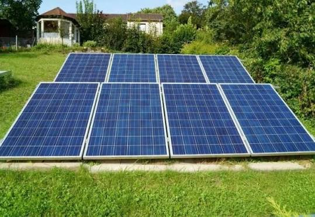
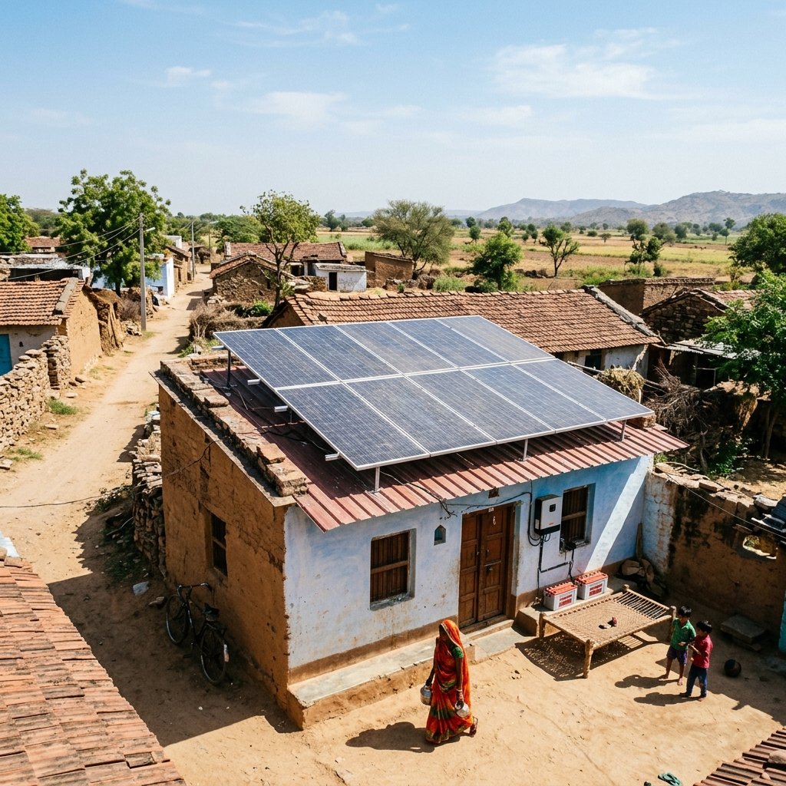

Introduction: The energy crisis is a major concern as the world's demands are increasing day-by-day while natural resources are limited. This has resulted in a coal crisis and increased electricity prices. Rural areas in Gujarat are facing electricity scarcity, which is impacting their development. While solar systems have been in demand due to their requirement and several benefits, there are still issues in some rural areas with electricity, clean water, and sanitation. Gujarat Rajya Gram Vikas Samiti (GRGVS) has taken up the initiative to develop infrastructure by providing solar systems to rural schools/anganwadi and villages to benefit the upcoming future.
Project Description: GRGVS promotes rooftop solar panels, micro- or mini-grids, and rechargeable batteries as ideal solutions to fill the gap. GRGVS can provide electricity to schools/anganwadis that are not even connected to the grid, and could thus serve extremely remote areas that may not be financially viable for discoms. In those areas where electricity is available but power cuts are frequent, it can fill the gap during power cuts. The execution of the solar off-grid system project provides a sustainable and impactful solution to the schools/anganwadis.
Solar street lights are also a part of the Government Initiative for preserving the environment. They have been installed in most cities and can benefit rural areas immensely to ensure electricity during nighttime. GRGVS is seeking financial support from various corporations under the Corporate Social Responsibility to take up such ambitious projects that can bring a revolution in the rural sector through renewable energy.
Impact & Conclusion: The execution of the project will provide continuous electricity supply to the students, allowing them to learn in a peaceful and comfortable atmosphere. This will also help to run fans, tube lights, bulbs, and e-learning kits. Solar street lights can help to reduce wild animal attacks and crime rates in the villages. Additionally, the project will promote clean and green energy access, control carbon emissions, and help to achieve sustainable development goals.

